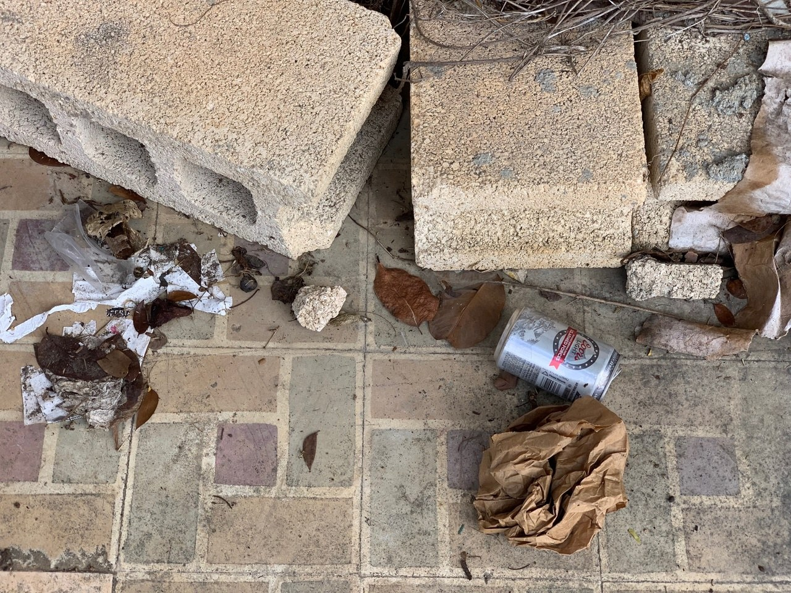
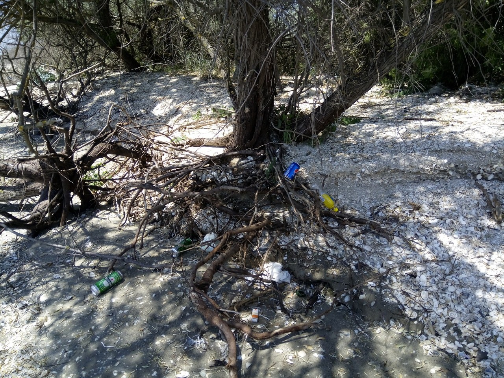
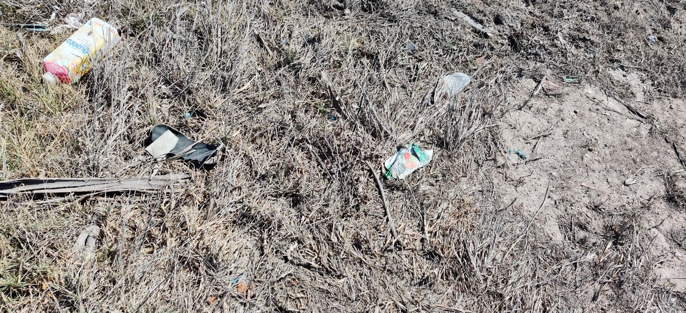

🗑️ Automatic Litter Detection & Segmentation
YOLO11s (trained on TACO, 5 classes) → box prompts → EfficientSAM-Ti → masks + count · ทีม อุดมไปด้วยธาตุเหล็ก · CP461
ทำงานในเบราว์เซอร์ของคุณทั้งหมด ไม่มีการอัปโหลดภาพไปที่เซิร์ฟเวอร์ (runs entirely in your browser)
ภาพขยะ (Litter photo) — คลิก ลากไฟล์มาวาง หรือวางจากคลิปบอร์ด
⬆️ อัปโหลดภาพ
click · drag & drop · paste
click · drag & drop · paste
หรือเลือกตัวอย่างจากชุดทดสอบ TACO



0.25
Boxes + EfficientSAM masks
ผลลัพธ์จะแสดงที่นี่
| Class | ประเภท | Count |
|---|
Detector: YOLO11s, 960 px, repeat-factor sampling (test mAP50 0.270). Segmenter: EfficientSAM-Ti (Xiong et al., CVPR 2024), pretrained, zero-shot. Works best on photos looking down at a few separate pieces of litter, like the TACO dataset. First load downloads ≈ 80 MB of models.